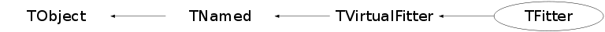

class TFitter: public TVirtualFitter
Function Members (Methods)
public:
protected:
| virtual void | TObject::DoError(int level, const char* location, const char* fmt, va_list va) const |
| void | TObject::MakeZombie() |
Data Members
public:
| enum TObject::EStatusBits { | kCanDelete | |
| kMustCleanup | ||
| kObjInCanvas | ||
| kIsReferenced | ||
| kHasUUID | ||
| kCannotPick | ||
| kNoContextMenu | ||
| kInvalidObject | ||
| }; | ||
| enum TObject::[unnamed] { | kIsOnHeap | |
| kNotDeleted | ||
| kZombie | ||
| kBitMask | ||
| kSingleKey | ||
| kOverwrite | ||
| kWriteDelete | ||
| }; |
protected:
| Double_t* | TVirtualFitter::fCache | [fCacheSize] array of points data (fNpoints*fPointSize < fCacheSize words) |
| Int_t | TVirtualFitter::fCacheSize | Size of the fCache array |
| void | TVirtualFitter::fFCN | |
| TMethodCall* | TVirtualFitter::fMethodCall | Pointer to MethodCall in case of interpreted function |
| TString | TNamed::fName | object identifier |
| Int_t | TVirtualFitter::fNpoints | Number of points to fit |
| TObject* | TVirtualFitter::fObjectFit | pointer to object being fitted |
| Foption_t | TVirtualFitter::fOption | struct with the fit options |
| Int_t | TVirtualFitter::fPointSize | Number of words per point in the cache |
| TString | TNamed::fTitle | object title |
| TObject* | TVirtualFitter::fUserFunc | pointer to user theoretical function (a TF1*) |
| Int_t | TVirtualFitter::fXfirst | first bin on X axis |
| Int_t | TVirtualFitter::fXlast | last bin on X axis |
| Int_t | TVirtualFitter::fYfirst | first bin on Y axis |
| Int_t | TVirtualFitter::fYlast | last bin on Y axis |
| Int_t | TVirtualFitter::fZfirst | first bin on Z axis |
| Int_t | TVirtualFitter::fZlast | last bin on Z axis |
| static TString | TVirtualFitter::fgDefault | name of the default fitter ("Minuit","Fumili",etc) |
| static Double_t | TVirtualFitter::fgErrorDef | Error definition (default=1) |
| static TVirtualFitter* | TVirtualFitter::fgFitter | Current fitter (default TFitter) |
| static Int_t | TVirtualFitter::fgMaxiter | Maximum number of iterations |
| static Int_t | TVirtualFitter::fgMaxpar | Maximum number of fit parameters for current fitter |
| static Double_t | TVirtualFitter::fgPrecision | maximum precision |
Class Charts
{kind=link}
{kind=link}
{kind=link}
{kind=link}

Function documentation
Int_t ExecuteCommand(const char* command, Double_t* args, Int_t nargs)
Execute a fitter command; command : command string args : list of nargs command arguments
void GetConfidenceIntervals(Int_t n, Int_t ndim, const Double_t* x, Double_t* ci, Double_t cl = 0.95)
Computes point-by-point confidence intervals for the fitted function
Parameters:
n - number of points
ndim - dimensions of points
x - points, at which to compute the intervals, for ndim > 1
should be in order: (x0,y0, x1, y1, ... xn, yn)
ci - computed intervals are returned in this array
cl - confidence level, default=0.95
NOTE, that the intervals are approximate for nonlinear(in parameters) models
void GetConfidenceIntervals(TObject* obj, Double_t cl = 0.95)
Computes confidence intervals at level cl. Default is 0.95 The TObject parameter can be a TGraphErrors, a TGraph2DErrors or a TH1,2,3. For Graphs, confidence intervals are computed for each point, the value of the graph at that point is set to the function value at that point, and the graph y-errors (or z-errors) are set to the value of the confidence interval at that point. For Histograms, confidence intervals are computed for each bin center The bin content of this bin is then set to the function value at the bin center, and the bin error is set to the confidence interval value. NOTE: confidence intervals are approximate for nonlinear models! Allowed combinations: Fitted object Passed object TGraph TGraphErrors, TH1 TGraphErrors, AsymmErrors TGraphErrors, TH1 TH1 TGraphErrors, TH1 TGraph2D TGraph2DErrors, TH2 TGraph2DErrors TGraph2DErrors, TH2 TH2 TGraph2DErrors, TH2 TH3 TH3
Double_t GetCovarianceMatrixElement(Int_t i, Int_t j) const
return element i,j from the covariance matrix
Int_t GetErrors(Int_t ipar, Double_t& eplus, Double_t& eminus, Double_t& eparab, Double_t& globcc) const
return current errors for a parameter ipar : parameter number eplus : upper error eminus : lower error eparab : parabolic error globcc : global correlation coefficient
Int_t GetParameter(Int_t ipar, char* name, Double_t& value, Double_t& verr, Double_t& vlow, Double_t& vhigh) const
return current values for a parameter ipar : parameter number parname : parameter name value : initial parameter value verr : initial error for this parameter vlow : lower value for the parameter vhigh : upper value for the parameter WARNING! parname must be suitably dimensionned in the calling function.
Int_t GetStats(Double_t& amin, Double_t& edm, Double_t& errdef, Int_t& nvpar, Int_t& nparx) const
return global fit parameters amin : chisquare edm : estimated distance to minimum errdef nvpar : number of variable parameters nparx : total number of parameters
void SetFCN(void (*)(Int_t&, Double_t*, Double_t&f, Double_t*, Int_t) fcn)
Specify the address of the fitting algorithm
Int_t SetParameter(Int_t ipar, const char* parname, Double_t value, Double_t verr, Double_t vlow, Double_t vhigh)
set initial values for a parameter ipar : parameter number parname : parameter name value : initial parameter value verr : initial error for this parameter vlow : lower value for the parameter vhigh : upper value for the parameter
void FitChisquare(Int_t& npar, Double_t* gin, Double_t& f, Double_t* u, Int_t flag)
Minimization function for H1s using a Chisquare method Default method (function evaluated at center of bin) for each point the cache contains the following info -1D : bc,e, xc (bin content, error, x of center of bin) -2D : bc,e, xc,yc -3D : bc,e, xc,yc,zc
void FitChisquareI(Int_t& npar, Double_t* gin, Double_t& f, Double_t* u, Int_t flag)
Minimization function for H1s using a Chisquare method The "I"ntegral method is used for each point the cache contains the following info -1D : bc,e, xc,xw (bin content, error, x of center of bin, x bin width of bin) -2D : bc,e, xc,xw,yc,yw -3D : bc,e, xc,xw,yc,yw,zc,zw
void FitLikelihood(Int_t& npar, Double_t* gin, Double_t& f, Double_t* u, Int_t flag)
Minimization function for H1s using a Likelihood method*-*-*-*-*-*
Basically, it forms the likelihood by determining the Poisson
probability that given a number of entries in a particular bin,
the fit would predict it's value. This is then done for each bin,
and the sum of the logs is taken as the likelihood.
Default method (function evaluated at center of bin)
for each point the cache contains the following info
-1D : bc,e, xc (bin content, error, x of center of bin)
-2D : bc,e, xc,yc
-3D : bc,e, xc,yc,zc
void FitLikelihoodI(Int_t& npar, Double_t* gin, Double_t& f, Double_t* u, Int_t flag)
Minimization function for H1s using a Likelihood method*-*-*-*-*-*
Basically, it forms the likelihood by determining the Poisson
probability that given a number of entries in a particular bin,
the fit would predict it's value. This is then done for each bin,
and the sum of the logs is taken as the likelihood.
The "I"ntegral method is used
for each point the cache contains the following info
-1D : bc,e, xc,xw (bin content, error, x of center of bin, x bin width of bin)
-2D : bc,e, xc,xw,yc,yw
-3D : bc,e, xc,xw,yc,yw,zc,zw